Overview
Hey! So MOBA VFX is a GDScript add-on with all the spell and weapon effects you see in a moba or RTS. Every missile is made of 4 parts you can swap however you want, motion, collision, arrival and volley, so most of the time a new behaviour is just mixing parts you already have and you dont even need to write code for it
The effects only draw stuff and tell you what happened, thats it, your game keeps its own damage and rules and just listens to signals like hit and impacted to apply them. Everything is pooled through one autoload so firing a hundred missiles doesnt build a hundred scenes
Everything is made to be reskinned, colours come from palette resources, size and brightness from a tier, and any missile can take your own head mesh, trail mask, impact scene or cast effect. The presets have neutral names and a neutral default palette on purpose, so think of them more like templates for your own abilities
boomerangchain_bouncehookhoming_swarmWhat's in the box
- 37 PROJECTILE ARCHETYPES - built out of 10 motion types, 8 arrival types, 7 volley patterns and one collision resource
- 64 IMPACT PRESETS - hits, crits and procs, explosions in three sizes, sphere and dome blasts, a ground slam, 10 surface impacts, 9 muzzle flashes, 8 floor decals (3 of them are parallax cracks), shell eject, reload, fizzle and an ultimate activation
- 9 CAST PRESETS - gather and release, channel loops, charge ups, an empowered weapon, overheat and a rune circle
- 26 PALETTES - 16 for elements, damage and defence, 8 for surfaces and 2 team colours
- LAUNCHER AND PREVIEW -
VFXProjectileLauncheris a node you drop under a character to fire an ability, andVFXProjectilePreviewfires a missile on loop right inside the editor - DEMO AND TEXTURES - a demo project, and in the paid edition a library of 618 procedural textures we made ourselves, that one took a while lol
Requirements
- GODOT 4.8 - standard build, you dont need C#
- FORWARD+ - its what we develop on, floor decals need Forward+ or Mobile
- 3D ONLY - just as it says
Install
- Copy
addons/moba_vfxinto theaddons/folder of your project, if you dont have one just make it - Open the project, go to Project › Project Settings › Addons and enable MOBA VFX on the Plugins tab
- That adds an autoload called
VFX(res://addons/moba_vfx/core/vfx_manager.gd), you can check if its there under Globals › Autoload, every spawn, the pooling and the budgets go through it
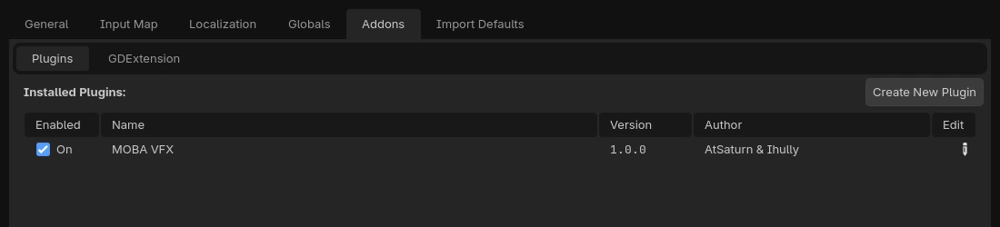
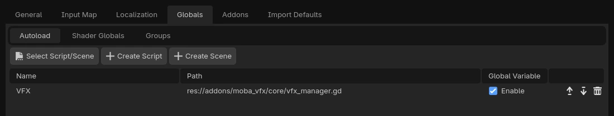
VFX autoload the plugin adds, under Globals › AutoloadIf you want to try the demo first just open the whole downloaded folder as a project and press Play. The first import takes a while because of all the textures, sorry about that, then a short splash plays (any key or click skips it) and scenes/main.tscn opens and goes through every archetype
| Key | Demo action |
|---|---|
| Click | Fire at a dummy or a spot on the floor |
| Q / E | Previous / next archetype |
| Space | Fire again at the same spot |
| T | Fire 10 at once |
| C / F | Auto-cycle / auto-fire on or off |
| P | Change which palette goes with which archetype |
| 1–4 | Tier (minor, normal, major, ultimate) |
| G | Team (neutral, ally, enemy) |
scenes/impacts_demo.tscn plays every impact, muzzle and cast on a dummy, a wall and the floor, just open it and press F6, in there I changes the intensity
Fire your first projectile
With VFXProjectileLauncher
The launcher is a node that holds the look and behaviour of one ability, you add one per ability as a child of a character, tower or weapon, here is how
- In your character scene add a child node of type
VFXProjectileLauncherand name itBoltLauncher - Set
archetypetores://addons/moba_vfx/presets/archetypes/targeted_bolt.tresandpaletteto any file inpresets/palettes/,frost.tresfor example - Set
muzzleto a node in the character's hand, ormuzzle_socketto a bone or socket name. If you leave both empty it just fires from the launcher itself - Set
tierandteamif you need them, and leavemissile_sceneempty to use the default missile
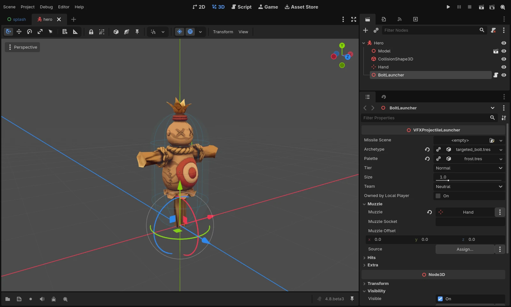
BoltLauncher child, archetype targeted_bolt.tres, palette frost.tres and the Hand marker as the muzzle. Click it to see it full sizeextends CharacterBody3D
@onready var bolt: VFXProjectileLauncher = $BoltLauncher
func cast_bolt(enemy: Node3D) -> void:
bolt.fire_at(enemy)
func cast_skillshot(aim_point: Vector3) -> void:
bolt.fire_direction(aim_point - global_position) # uses the archetype's skillshot_rangecast_skillshot assumes the launcher's archetype is a skillshot like skillshot.tres, that one flies in a direction instead of at a target. fire_at() takes a unit (homing archetypes chase it) or a Vector3 point, and fire_forward() fires along the launcher's -Z axis. All three of them take an optional extra dictionary with settings for that one shot, like bolt.fire_at(enemy, {"charge": 0.5})
The caster is the launcher's parent unless you set source, and the caster and everything under it never gets hit by its own shots, so no killing yourself with your own fireball lol
With VFX.fire
You dont have to use the launcher tbh, all it does is wrap this one call:
const MISSILE := preload("res://addons/moba_vfx/effects/projectile/missile.tscn")
const BOOMERANG := preload("res://addons/moba_vfx/presets/archetypes/boomerang.tres")
const FROST := preload("res://addons/moba_vfx/presets/palettes/frost.tres")
func cast_blade(caster: Node3D, enemy: Node3D) -> void:
VFX.fire(MISSILE, caster.global_position + Vector3.UP, enemy, BOOMERANG,
{"palette": FROST, "tier": VFXEffect.Tier.MAJOR, "team": VFXEffect.Team.ENEMY}, caster)The signature is VFX.fire(scene, from, target, archetype, settings, source, on_spawn). target can be a Node3D or a Vector3, and settings can set any exported property of the missile. VFX.fire also handles the archetype's volley, so one call can spawn a whole fan, burst or rain. If you just want one missile without an archetype use VFX.spawn_projectile(scene, from, target, settings)
Deal damage on hit
The effects dont deal damage, they only tell you when something happened and your code decides what it means, there might be better ways but its just how i prefer doing it since every game does damage differently. Two signals do most of the work:
hit(body, at): a unit got touched in flight, use it for anything with a collision resource (skillshot,piercing_line,fan_volley,boomerang). A piercing shot emits it once for each unitimpacted(at, target): the missile arrived, and it fires again on each chain hop.targetis null when it lands on the ground. Use it for shots that can't miss, liketargeted_bolt
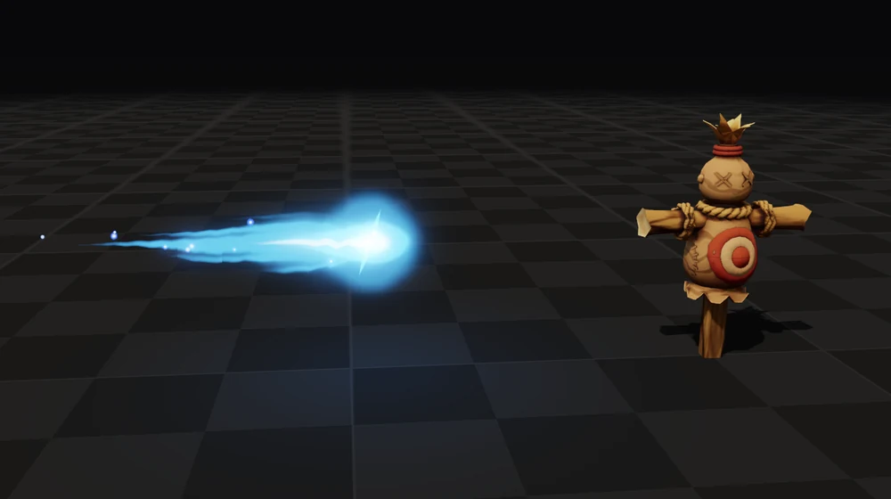
collision emits hit when it touches the unit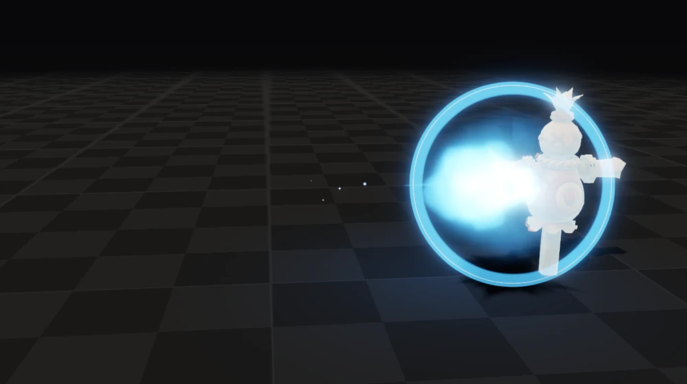
impacted fires, the impact_effect plays and the unit flashesOn the launcher
The launcher passes along the signals of every missile it fires, so you only connect once:
func _ready() -> void:
bolt.hit.connect(func(body: Node3D, _at: Vector3) -> void:
if body.has_method("take_damage"):
body.take_damage(60))
bolt.impacted.connect(func(_at: Vector3, target: Node3D) -> void:
if target and target.has_method("take_damage"):
target.take_damage(60))
# The missile's other signals: returned, stuck, bounced, target_lost, armed
bolt.projectile_spawned.connect(func(m: VFXProjectile) -> void:
m.returned.connect(_on_blade_caught))With on_spawn
With VFX.fire you pass an on_spawn callable instead. It runs for every missile, delayed volley shots and the children of split missiles (like cluster bombs) included:
VFX.fire(MISSILE, from, enemy, BOOMERANG, {}, caster,
func(m: VFXProjectile) -> void: m.hit.connect(_on_blade_hit))
func _on_blade_hit(body: Node3D, _at: Vector3) -> void:
body.take_damage(40)POOLING - when a missile goes back to the pool any connections your game code made get dropped, this one got me a few times lol. Connect inside on_spawn or projectile_spawned on every shot, or once on the launcher, and dont keep a reference to a missile to connect to it later
Global signals
The VFX autoload emits projectile_hit(projectile, body, at) for every unit hit in flight and impact_played(effect, at, target) for every impact. These survive pooling so they're the easy place for hit sounds, hit reactions and camera shake, but they fire for everyone's projectiles, so keep damage on the per ability signals
func _ready() -> void:
VFX.impact_played.connect(func(_fx: VFXEffect, at: Vector3, _target: Node3D) -> void:
$HitSound.global_position = at
$HitSound.play())
VFX.feedback.connect(func(_fx, _hitstop: float, shake: float, _at: Vector3) -> void:
$Camera.shake(shake)) # your own camera codeVFX.feedback(effect, hitstop, shake, at) carries the hit stop and shake that big impacts ask for. The demo camera code in scenes/demo/juice/ is a working example (the cue table is in scenes/demo/juice/demo_cues.gd), and nothing in the runtime depends on it, so feel free to throw it away
Your hurtboxes and teams
- Set the launcher's
unit_maskto your hurtbox physics layer (layer 2 by default). Area3D hurtboxes count too (VFXCollision.hit_areas) - Set
unit_groupto the group your units are in, like"team_blue"on the red team's launcher. A hit on a hurtbox Area walks up to the parent in that group, sobodyis your unit and not the Area - If a unit has
is_targetable() -> booland it returns false (dead, invisible, untargetable), homing shots lose it and do whatever the archetype'son_target_lostsays
Projectile parts
An archetype (VFXProjectileArchetype) bundles the four parts together with flight settings like speed, travel_time, skillshot_range, face_mode, spin_speed and on_target_lost. Any other projectile property goes in its overrides
| Part | Options |
|---|---|
motion | VFXMotion (straight, hug_ground, speed_curve), VFXMotionArc, VFXMotionWave, VFXMotionSpiral, VFXMotionBallistic (gravity, bounces, fuse, rolling), VFXMotionSteer (turn-rate homing, swarms, curveballs, ground runners), VFXMotionOrbit, VFXMotionFall, VFXMotionInstant (hitscan), VFXMotionBezier (hand-drawn curves) |
collision | VFXCollision: first hit or pierce, max_hits, walls STOP / BOUNCE / PASS, physics masks or a unit group |
arrival | VFXArrivalReturn (boomerang, hook with carry_target, catch with return_to), VFXArrivalChain, VFXArrivalSplit, VFXArrivalStick, VFXArrivalContinue, VFXArrivalLaunch, VFXArrivalArm (traps), VFXArrivalPullCaster (grapple) |
volley | VFXVolley: FAN, LINE, RING, BURST, SPREAD, SWARM, RAIN |
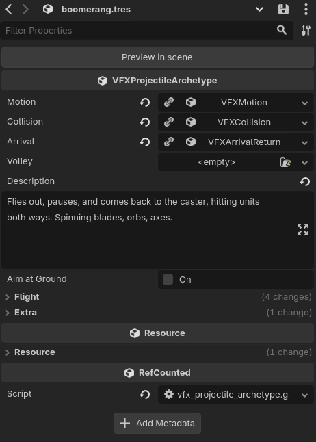
boomerang.tres in the inspector, the four part slots on top, flight settings under Flight and the Preview in scene buttonTo make your own just duplicate any archetype from presets/archetypes/ and edit it in the inspector, swap the motion to change the path, add an arrival to change what happens at the end, or add a volley to fire a bunch at once. For charged shots set charge (0 to 1) before firing
Runtime calls on a missile are fire(), fire_direction(), detonate() (recast), disjoint(), redirect(new_target, new_source) and destroy(play_impact). If you want to control which unit a chain or retarget picks, set target_finder
The 37 archetypes
They live in presets/archetypes/ and each one has a short description you can read in the inspector. The six marked free are also in the free edition, which has the same motion, arrival and volley scripts, so you can for sure rebuild the other ones yourself if you feel like it
ground_wavecluster_bomb| Archetype | What it does |
|---|---|
accelerating_rocket | Starts slow and speeds up over a long range, stopping on the first unit. |
bezier_swoop | Follows a hand drawn curve, a pair of shots mirror each other. |
boomerang free | Flies out, pauses and returns to the caster, hitting units both ways. |
bouncing_grenade | Thrown with gravity, bounces off the ground and walls, then explodes. |
burst_fire | A quick string of fast bolts at one target. |
carpet_bomb | Flies high over a line and drops explosions along the way. |
catch_return | Hits, then arcs back to a spot near the caster to be caught. |
chain_bounce | Jumps from unit to unit, shrinking with each jump. |
charged_shot | Size and speed follow how long the shot was charged. |
cluster_bomb | Lands and bursts into bouncing bomblets. |
curveball | Thrown off-line and curves back onto the aim point. |
fan_volley free | A cone of skillshots that each stop on the first unit. |
fire_trail | A ground-hugging wave that leaves burning patches behind it. |
grapple | Latches onto a unit or wall and pulls the caster along the chain. |
ground_runner | Rolls along the ground, bounces off walls and seeks the target. |
ground_wave | Travels along the floor, hits everything and splits the ground open. |
guided_missile | Steers toward a node your code moves, like a piloted drone. |
hitscan_tracer | Instant hit with a fading tracer line. |
homing_swarm | Small missiles fan out, then curve in on the target. |
hook | Grabs the first unit hit and drags it back on a chain. |
lob free | Arcs to a ground point in a fixed time. |
meteor | Falls from the sky at an angle, impacts, then rolls on and burns a path. |
nova_ring | Missiles burst outward in every direction from the caster. |
orbit_strike | Orbs circle the caster, then launch at the target. |
piercing_line free | A long line through everything that grows as it flies and weakens with each unit. |
proximity_mine | Arms on landing and goes off when a unit walks close. |
recast_orb | A slow piercing orb you can detonate early with a recast. |
ricochet_arrow | A fast arrow that bounces off walls and the ground. |
shotgun_spread | Many fast pellets in a random cone. |
skillshot free | A fixed-range line that stops on the first unit hit. |
skipping_bomb | Lands, skips forward a few times, then explodes. |
sky_rain | Missiles rain down across an area. |
split_shot | Splits at right angles when it hits something or runs out of range. |
sticky_bomb | Sticks to a unit, pulses faster and faster, then detonates. |
targeted_bolt free | A point-and-click bolt that can't miss. |
telegraphed_strike | Charges in the sky for a beat, then slams straight down. |
wind_wall | A wide, slow wall of energy that sweeps through everything. |
Impacts, muzzles and casts
effects/impact/presets/ has 64 scenes: hits, crits, procs and magic impacts, explosions S/M/L, sphere and dome blasts, a ground slam and an AoE resolve, impacts for each surface material, barrier ripples, shield and weak point hits, the target hit flash, decals, muzzles per weapon, shell eject, reload, fizzle and ultimate activation. effects/cast/presets/ has 9: gather and release, held and channel loops, charge ups (continuous and stepped), an empowered weapon, overheat and a rune circle
Any of them goes straight into a projectile slot, or plays by itself with VFX.spawn:
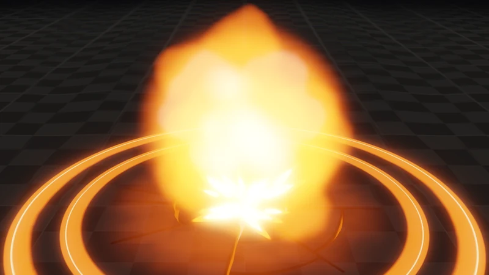
explosion_large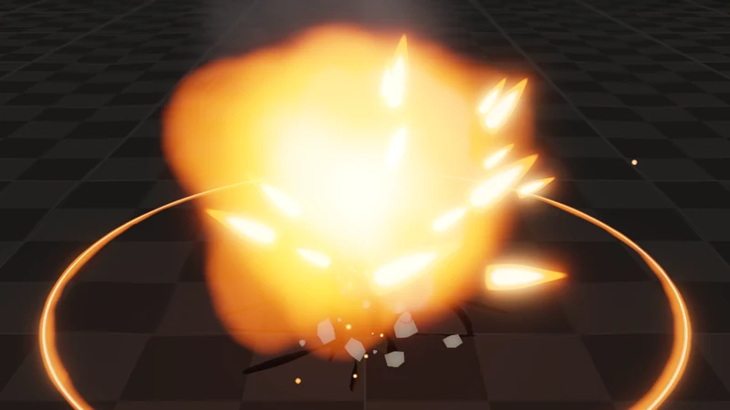
explosion_medium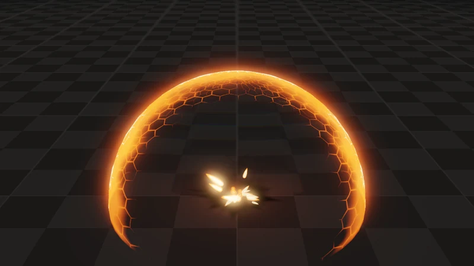
blast_sphere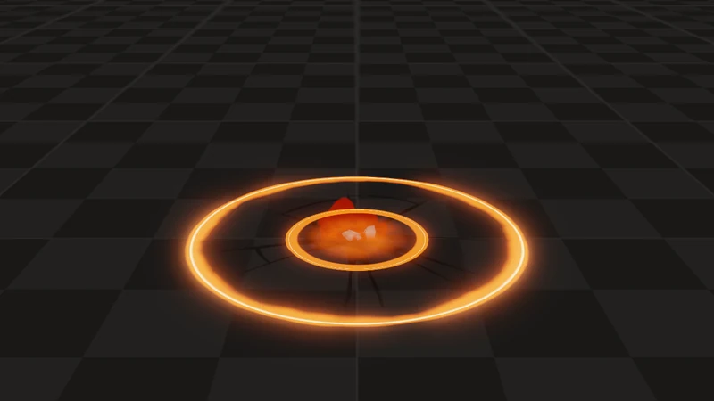
impact_ground_slam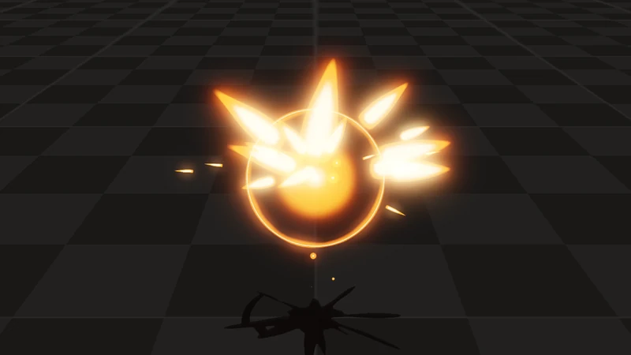
hit_critical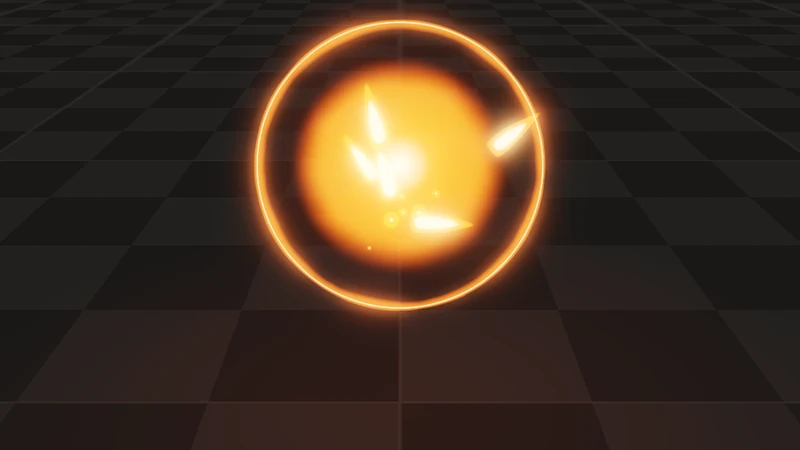
impact_magic_burst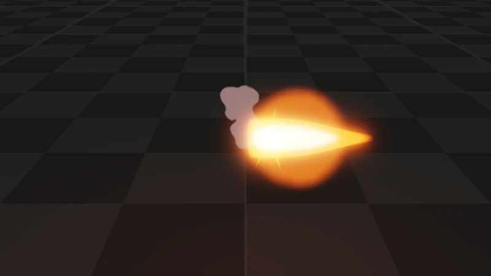
muzzle_rifle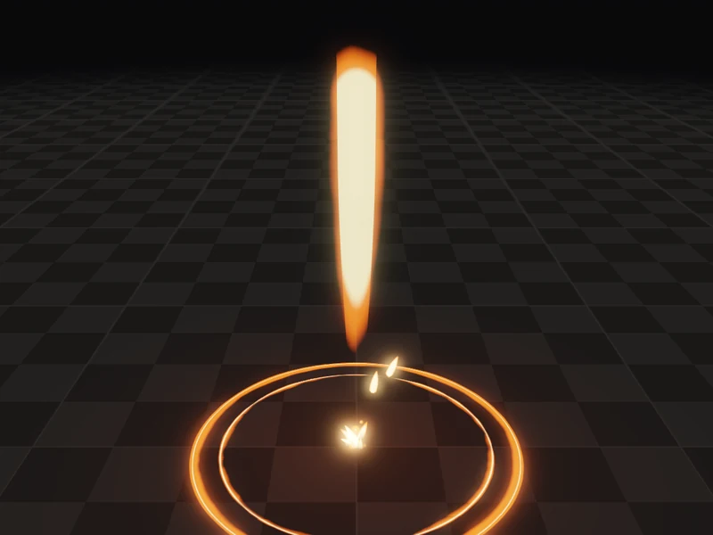
ultimate_activationAll eight use the fire palette, and every one of them recolours with any other palette
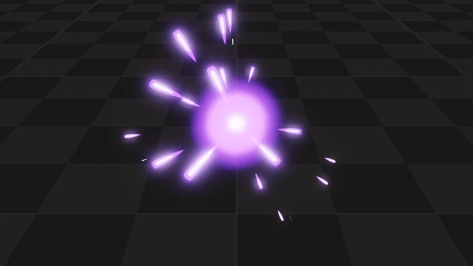
charge_up at 80% charge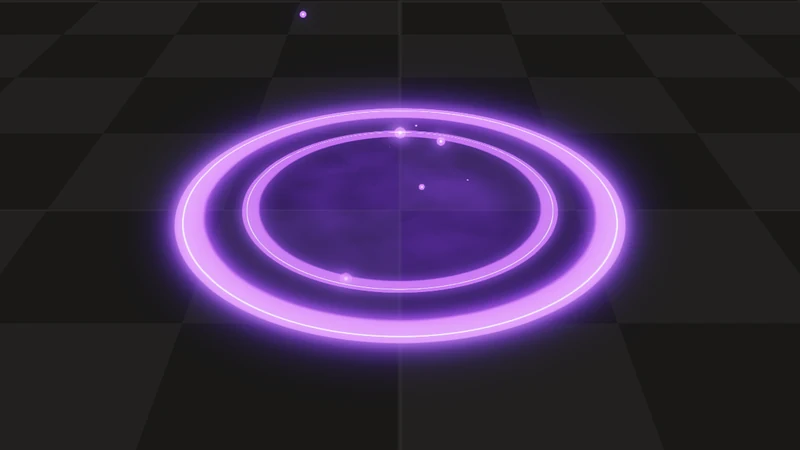
cast_rune_circle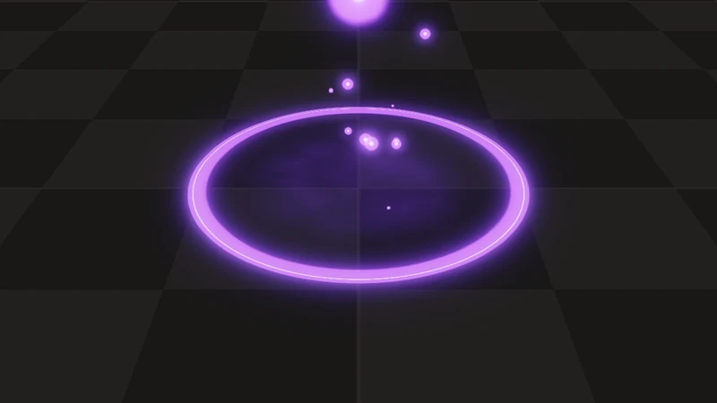
channel_loop# Sticky hit on the unit, turned to the hit surface, scaled by hit strength:
VFX.spawn(HIT, at, {"hit_target": unit, "hit_normal": n, "direction": dir, "intensity": 1.5})
# Pick the impact by surface (collider meta "vfx_surface" = "metal", or a group):
VFX.spawn_surface_impact(preload(".../surfaces/default_surfaces.tres"), collider, at, normal, dir)
# Charge-up in the hand:
var c: VFXCast = VFX.attach(CHARGE, VFX.socket(hero, "hand_r"))
c.fully_charged.connect(ding)
c.set_charge(t)
c.release(aim) # or c.interrupt() / c.cancel()Here is what they're built from:
VFXLayerwraps any layer with a start delay, lifetime and jitter, scale from and to, a fade curve, spawn chance, pick one variant, random spin,rotate_speed,charge_scaleand a trigger (on play, release, stage, full charge or interrupt)VFXImpacthasintensity(it drives size, brightness and density),stick_to_target,max_screen_fractionso it never covers the target, light flicker,extra_effectsandhitstop/shakeVFXCastis the stage API:set_charge,set_progress,release,interrupt,cancel, plus signalsVFXHitFlashflashes the target's own meshes,VFXDecalEffectis a decal tinted by the palette that fades out, andVFXSurfaceSetpicks the impact scene by surface- Every effect has
orient(SURFACE, DIRECTION, DIRECTION_FLAT, RICOCHET, REVERSE, CAMERA_YAW) plushit_normalanddirection, projectiles fill these in for their impacts and casts
Big explosions, the sphere and dome blasts, the ground slam, the critical hit and a few muzzles bend the world behind them with shaders/vfx_distort.gdshader. It all sits under a node called Distortion, so if you dont like it just hide Visual/Distortion or add it to a missile's hide_layers
Reskinning
| What | Where |
|---|---|
| Colours | VFXPalette (primary, core, accent, intensity, optional light_color). Presets in presets/palettes/. |
| Size and importance | tier (MINOR to ULTIMATE scales size, brightness and particle count) and size |
| Timing | VFXTiming: anticipation, impact, sustain and dissipation, with curves. Presets in presets/timing/. |
| Team colours | team with ally_palette / enemy_palette |
| Who sees it | audience (everyone, allies, enemies, owner only) and owned_by_local_player |
| Layer look | Each layer's own material: shape, brightness, hardness, noise, erosion |
Palettes go in as per instance shader parameters, so pooled missiles with different palettes can share materials without problems. To make one, duplicate a file in presets/palettes/, change the colours and assign it to the launcher, or pass {"palette": MY_PALETTE} in settings
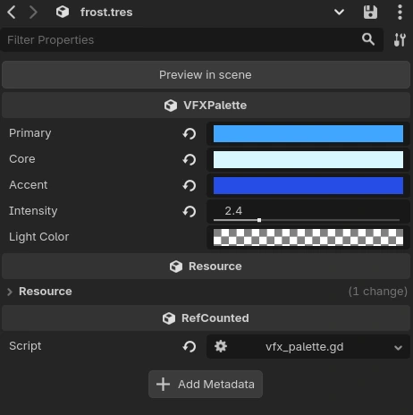
frost.tres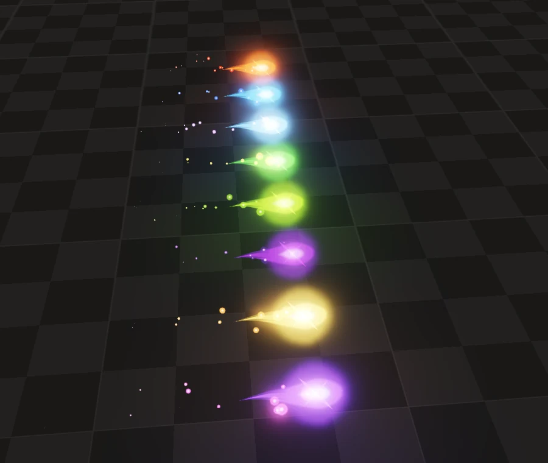
fire, frost, lightning, nature, poison, shadow, holy, arcane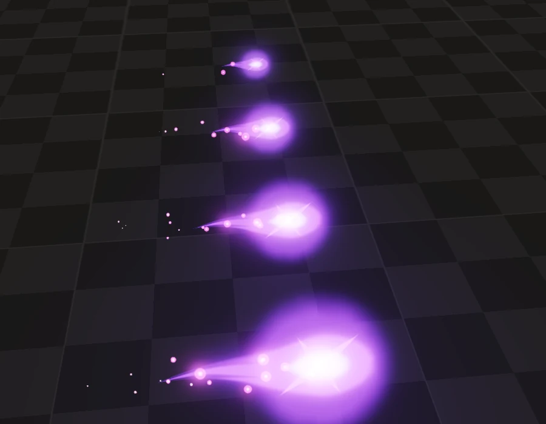
tier, back to front: MINOR, NORMAL, MAJOR, ULTIMATEEffect slots
impact_effectplays on arrival, andextra_impact_effectsadds morecast_effectplays at the muzzle on launchhit_effectsplay on each unit a piercing shot goes throughdrop_effectgets left along the path, andimpact_burn_patchmakes a fire trailstatus_on_hitneeds the status effects module, which isnt in this volume yet, without it the slot just gets ignored
bolt.settings = {
"impact_effect": preload("res://addons/moba_vfx/effects/impact/presets/explosion_small.tscn"),
"cast_effect": preload("res://addons/moba_vfx/effects/impact/presets/muzzle_energy.tscn"),
}Your own missile head
head_scene puts any scene (a mesh, sprites, particles) on the missile as its head, and hide_layers hides the default layers you're replacing. Paths are relative to the missile root. The default missile has Visual/Halo, Visual/Core (which includes the comet body Visual/Core/Comet), Visual/Light, Embers and Trail
bolt.settings = {
"head_scene": preload("res://my_game/fx/axe_head.tscn"),
"hide_layers": PackedStringArray(["Visual/Core", "Visual/Halo"]),
"spin_speed": 900.0,
"face_mode": VFXProjectile.FaceMode.FLAT,
}Use velocity_layers for layers that should keep pointing along the flight while the head spins (local +Y is the velocity, pair them with the shape shader's axis_billboard). If you want to keep a reskin as a file, right click effects/projectile/missile.tscn, pick New Inherited Scene, change what you need and set it as the launcher's missile_scene
Trail mask
The ribbon behind the missile is the Trail node, drawn with shaders/vfx_trail.gdshader. In your inherited missile scene make the trail's material_override unique, turn on use_mask and set mask_texture to a texture that tiles horizontally, then tune mask_tile_length (metres per repeat), mask_scroll, mask_strength and mask_distort
Textures on layers
Glows, sparks and smoke use the shape shader (vfx_shape_add for glows, vfx_shape_mix for smoke and dark backing layers)
- Set
shapeto Texture and assignmask_texture,mask_channelpicks red, green, blue, alpha or luminance - For a sprite sheet set the flipbook grid and frame rate.
flipbook_random_framegives each particle a random frame, so a 2×2 sheet gives you four variants use_rampwith aramp_textureswaps the palette for your own gradientmask_edge_fade(default 0.12) fades textured sprites before they reach the quad border, so you don't get a hard square edge- The procedural shapes are glow, ring, streak, puff, flare, disc, bubble and droplet
Masks are grayscale, white is full energy and black is nothing. The paid edition has 618 ready textures in textures/Ours, sorted by use (Glow, Smoke, Sparks, Trails, Noise and others)
Layer and shader options
VFXLayer.face_camera_off_groundwithfloor_threshold: a flat ring lies on the floor, but turns to face the camera when the hit is on a unit or a wall. Every plane ring in the pack has it onparticle_face_camera(shape shader): round sprites like smoke, puffs, glows and chips always face the camera, even when the effect is turned toward a wall, sparks and streaks keep their velocity alignmentVFXLayer.outlive_effect(on by default): one shot particles finish their own lifetime, so embers and debris don't vanish mid air when the effect fades. The effect waits for them, up to 3 sVFXLayer.billboard: MATERIAL, OFF, ON or Y_AXIS (upright, for columns and flames)vfx_dome.gdshadertakes apattern_texture, that's howblast_spheregets its hex pattern andblast_hemisphereits flowing contours
Textures the effects use
We made all of these in our own procedural texture tool, and you can swap any of them for your own:
effects/projectile/textures/: the comet head (proj_comet.png, drawn byVisual/Core/Comet), the tiling trail mask (proj_trail.png), a spark (proj_spark.png) and 2×2 debris chips (proj_debris.png)effects/impact/textures/: 2×2 smoke and fireball sheets (impact_smoke.png,impact_blast.png), an area ring (impact_area.png), the dome patterns (blast_sphere_hex.png,blast_hemi_flow.png) and the black scorch mask (decal_scorch_black.png)
Preview in the editor
VFXProjectilePreview fires a missile on loop between two stand in capsules, right in the editor viewport
- Add a
VFXProjectilePreviewnode to any 3D scene - Set
missile_scene,archetype,palette,tierandteam, the next shot picks them up - Use the Fire now and Clear buttons in the inspector,
intervalsets the time between shots - Move the target with
target_offsetor setaim_atto a node in your scene.target_strafemoves it sideways so you can see the homing working, andextra_targetsadds more capsules for chains, splits and pierce
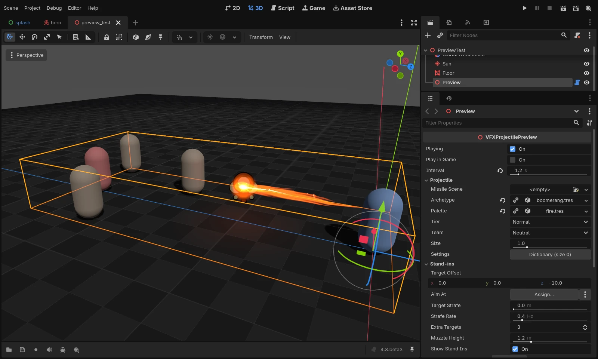
VFXProjectilePreview firing boomerang.tres with the fire palette, inside the editor. The blue capsule is the caster and the other ones are targetsArchetype and palette resources also get a Preview in scene button in the inspector, it sends them to the preview in the open scene (and adds one if there isnt one yet)
- Palette and archetype edits show up on the next shot, changes to a missile or impact scene show up after you save that scene
- The preview doesn't save anything into your scene, and its missiles only hit the capsules
- In a running game it does nothing unless
play_in_gameis on
For this to work (and it was a pain to get right lol) the effect, projectile, impact, burst, cast, layer, trail and beam scripts are @tool. Inside a scene you're editing they stay inert (VFXEffect.editor_inert()), so opening and saving effect scenes doesn't change them, only effects under a preview actually run in the editor
Performance
Prewarm
The first time an effect plays, Godot builds its instances and compiles its shaders, and that can cause a hitch. Soo its better to do that during loading, set prewarm on the launcher (missiles get made in _ready), or call VFX.prewarm(scene, count) on level load for the missiles and impacts your level uses
Budgets
The autoload limits how much big fights cost, set these at startup:
func _ready() -> void:
VFX.max_particles = 2500
VFX.max_lights = 8| Setting | Default | What it does |
|---|---|---|
max_lights | 12 | Past this many effect lights, the lowest-tier ones farthest from the camera go dark until a slot frees up. |
max_particles | 4000 | When everything playing asks for more, each emitter spawns proportionally fewer. |
min_particle_ratio | 0.25 | The floor for that reduction. |
budget_interval | 0.1 s | How often the budget is recalculated. |
max_pooled_per_scene | 32 | Idle copies kept per scene. Extra finished effects are freed. |
For a debug overlay read VFX.particle_ratio, VFX.lights_culled and VFX.get_active_count(). VFX.stop_all() clears every effect, useful on a level change. Lower tiers are cheaper too, MINOR uses fewer particles than ULTIMATE
Floor marks and clipping
Floor marks
- Scorch marks and cracks are floor only (
VFXDecalEffect.ground_only). When an explosion goes off on a unit or wall the mark drops to the floor below, or gets skipped if there's no floor withinmax_ground_drop. Bullet holes still stick to walls - Marks don't pile up, a new mark overlapping a live one of the same
stack_groupreplaces it (cracks share the groupground_crack). Marks spaced out along a path all stay - Scorch marks are always black, the palette only colours the glowing embers
VFXEffect.snap_to_ground(mask, max_drop, floor_y)does the floor lookup if your own effects need it
Parallax cracks
decal_crack_deep, decal_crack_glow and the 7 m decal_crack_crater look like they're actually cut into the floor, tbh this is my favourite part of the pack. They use VFXCrackEffect and vfx_crack_parallax.gdshader, which does parallax occlusion mapping on a flat quad. The glow version puts light at the bottom of the cracks, so it hides at grazing angles and shows up when you look down into it
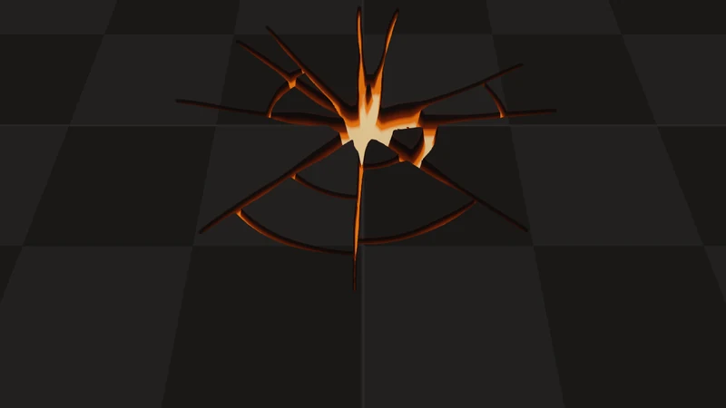
decal_crack_glow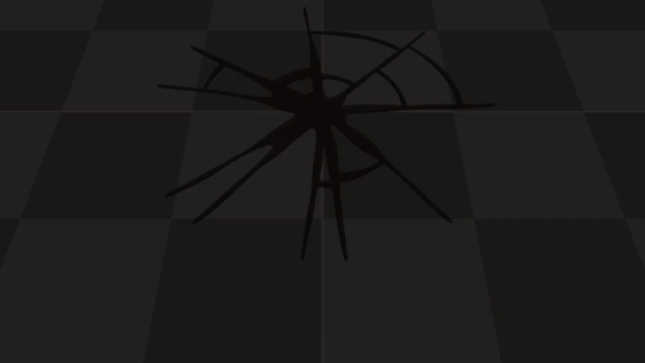
decal_crack_deep- Parallax:
parallax_enabled,depth(metres),steps - Glow:
glow_enabled,glow_depth,glow_intensity,wall_glow,glow_spill,glow_pulse,glow_fade_power - Script:
open_time,max_active(the oldest crack closes early) andrandom_rotation - Swap
crack_depth_height.pngandcrack_depth_mask.pngfor your own cracks. Cracks only work on flat ground
Clipping
Effects never turn depth testing off, so walls in front always hide them. To stop them clipping into what they hit there are three settings instead:
depth_pullmoves camera facing layers toward the camera in depth, so a hit doesn't get swallowed by the unit it hitsoft_fadesoftens layers where they meet geometrysurface_offsetpushes impacts out along the hit normal
Sparks, debris and embers land and bounce wherever your level has a GPUParticlesCollision* node under the floor, without one they just fall through the floor
Make a new effect
- Extend
VFXEffect, orVFXProjectile/VFXBurst - Put the visual layers under a child named
Visual, that's the node tier scales - Use
vfx_shape_addfor glows,vfx_shape_mixfor smoke and dark backing layers, andvfx_trailfor ribbons - Override the hooks you need:
_on_play,_on_update,_on_phase,_on_reset,_holds_sustain
For a new flight behaviour extend VFXMotion (override begin and step, or just get_offset for paths) or VFXArrival (override arrive). Motions and arrivals are stateless resources, so keep per missile state in the VFXFlight they get passed (flight.data)
Before editing a preset by hand save it as an inherited scene or a copy, that way pack updates wont overwrite your version
API reference
VFX autoload
| Call | What it does |
|---|---|
fire(scene, from, target, archetype, settings, source, on_spawn) | Fires an archetype, volley included. on_spawn runs for every missile. |
spawn_projectile(scene, from, target, settings) | Fires a single missile. |
spawn(scene, position, settings) | Plays any effect. |
attach(scene, unit, settings) | Plays an effect that follows a unit. |
spawn_surface_impact(set, collider, at, normal, dir) | Picks and plays the impact for a surface. |
socket(unit, name) | Finds a bone or socket to attach to. |
prewarm(scene, count) | Builds pooled copies ahead of time. |
stop_all(), get_active_count() | Clears every effect; counts the live ones. |
Signals on the autoload: projectile_hit(projectile, body, at), impact_played(effect, at, target), feedback(effect, hitstop, shake, at).
Effects and missiles
Every effect has play(), stop() (fades out) and kill() (instant), and emits started, phase_changed, impacted and finished. settings can hold any property, and when an effect goes back to the pool its exported properties reset, so every spawn starts clean
Missiles add hit, bounced, returned, stuck, target_lost, armed and spawned_child(child). The launcher re-emits hit and impacted, and adds projectile_spawned(projectile) and projectile_finished(projectile)
Common problems
- "VFXProjectileLauncher: the VFX autoload is missing."
- The plugin isnt enabled. Enable MOBA VFX under Project Settings › Addons › Plugins and check that
VFXshows up under Globals › Autoload - No scorch marks or cracks on the floor.
- Decals need Forward+ or Mobile, they don't render on Compatibility. They're also floor only, so on a unit or wall hit they drop to the floor below or get skipped if there's no floor within
max_ground_drop - Sparks and debris fall through the floor.
- GPU particles only collide with a
GPUParticlesCollision*node. Add aGPUParticlesCollisionBox3D(or aGPUParticlesCollisionHeightField3Dfor uneven terrain) under your floor, sized to the play area. The demomain.tscnhas one calledFloorCollision - Skillshots fly through units and
hitnever fires. - The collision only sees units on its
unit_mask, physics layer 2 by default. Put your units or hurtboxes on that layer, changeunit_maskor setunit_group. Also check the archetype,targeted_bolthas no collision so it reportsimpactedand nothit - My signal connections stop working after a few casts.
- Pooled effects drop game code connections when they go back to the pool. Connect in
on_spawnorprojectile_spawned, or once on the launcher - A homing missile gives up on its target.
- The target has
is_targetable()and it returned false, the missile then does whatever the archetype'son_target_lostsays - The first cast stutters.
- Shaders are compiling, prewarm the scene
- Effects disappear behind walls.
- Thats on purpose. If an effect clips into the unit it hits, raise
depth_pullorsoft_fade, orsurface_offseton the impact - Cracks float or cut into slopes.
- Parallax cracks are flat quads, they only work on flat ground
- Edits to the missile scene don't show in the editor preview.
- Save the scene, the preview only picks up scene changes on save
FAQ and editions
- Can I use it in a commercial game?
- Yes, in as many of your own games as you want. The terms are in
LICENSE.mdinside the zip - Can I edit the effects?
- Yes for sure, change anything you want
- Can I resell or share the pack?
- No, please dont, not as an asset, template or source files, edited or not
- Does it work on mobile?
- We develop on Forward+. The Mobile renderer supports decals but we havent profiled the pack on phones yet so idk how it runs there. Its untested on Compatibility, and floor decals dont render there
- Does it handle damage?
- No, effects report hits and impacts through signals and your code applies the damage
| Free | Paid | |
|---|---|---|
VFX autoload, pooling, all motions, arrivals, volleys and collision | Yes | Yes |
| Projectile archetype presets | 6 | 37 |
| Impacts (64), casts (9) and palettes (26) | Yes | Yes |
| Parallax cracks and blast refraction | Yes | Yes |
| Launcher, editor preview, demo scenes and docs | Yes | Yes |
| Texture library (618 textures) | No | Yes |
You can get both editions on my itch.io page, if something is broken or you find a bug just tell me there and i am going to try fixing it